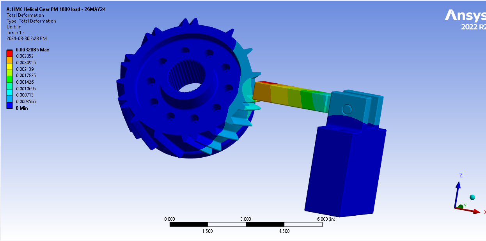
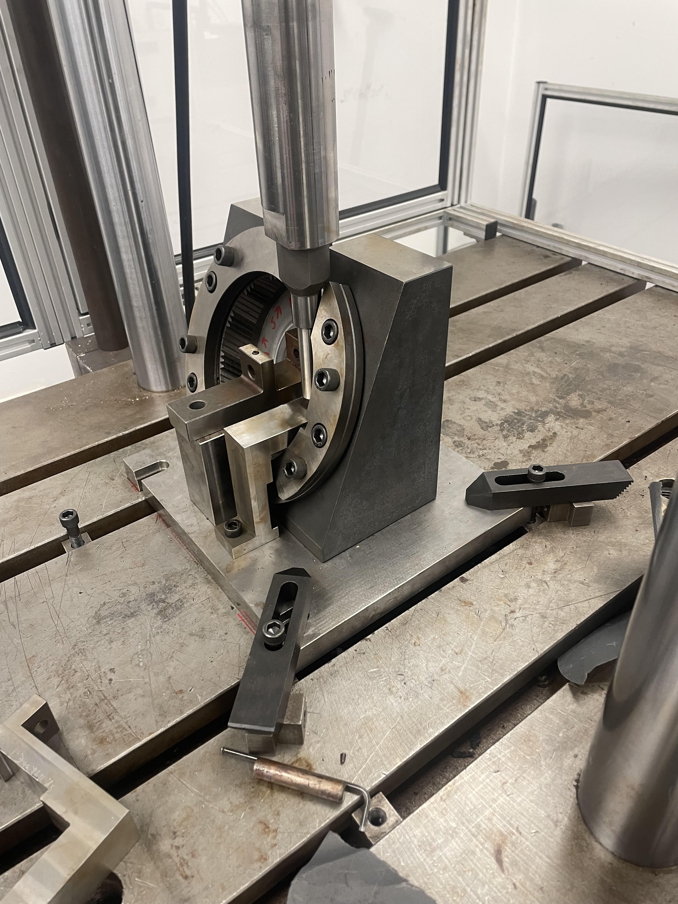
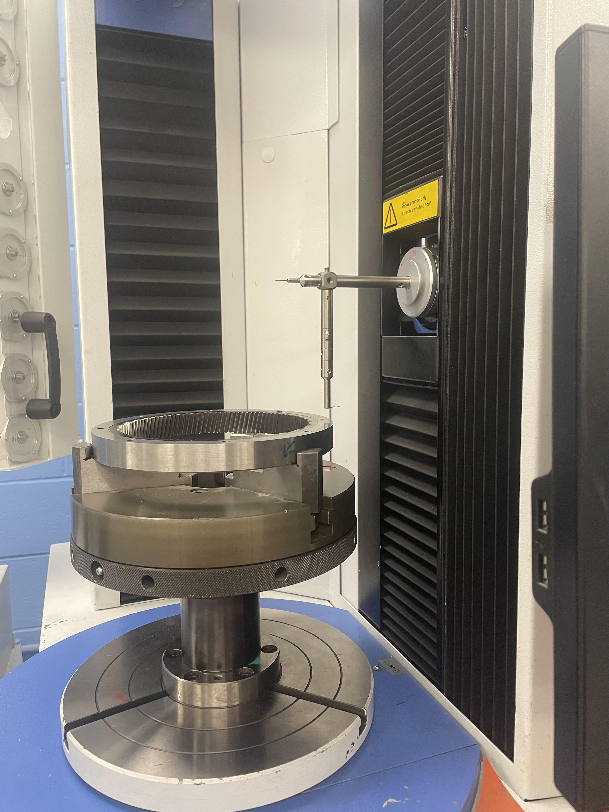
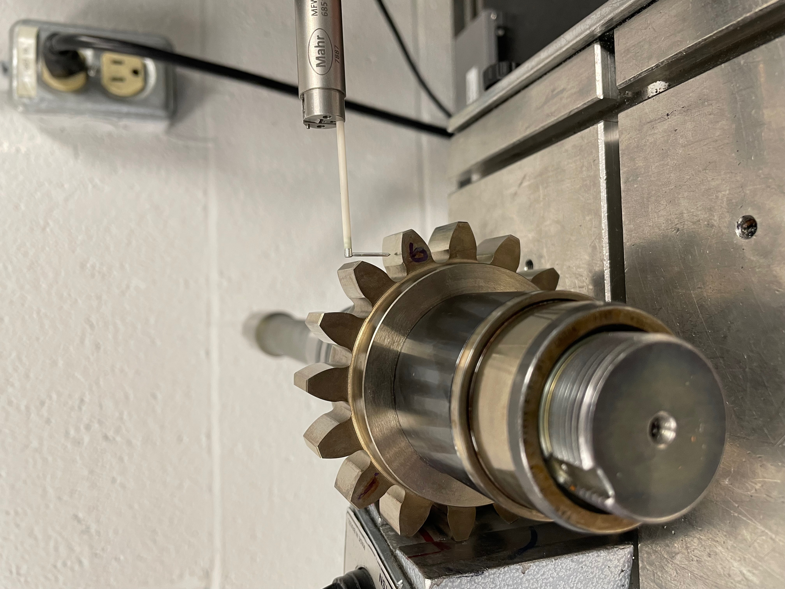
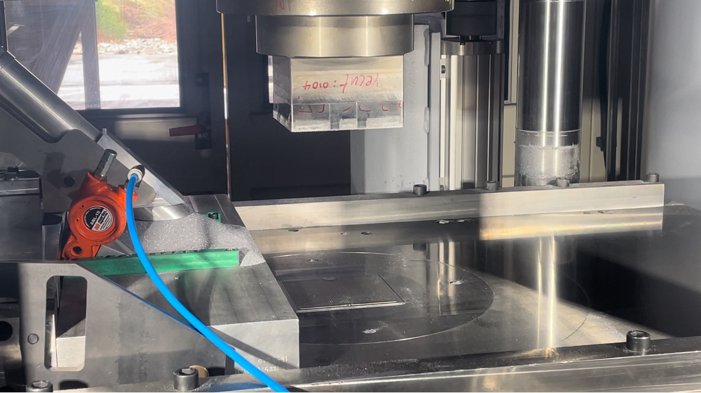
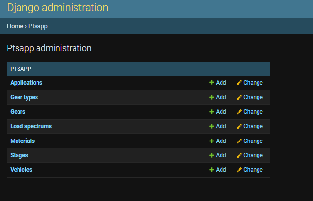

<link rel="stylesheet" href="css/styles.css">
<!-- Navigation Bar -->
     <!-- Social Media Icons -->
     <nav class="nav">
        <div class="nav-content">
            <a class="nav-item active" href="index.html">ABOUT</a> <!-- Link to the main about page -->
            <a class="nav-item" href="experience.html">EXPERIENCE</a> <!-- Link to the new Experience page -->
            <a class="nav-item" href="projects.html">PROJECTS</a> <!-- Link to projects page (if it exists) -->
        </div>
    
        <div class="social-media">
            <a href="https://github.com/dashboard" class="social-link">
                
            </a>
            <a href="https://www.linkedin.com/in/salih-al-tak/" target="_blank" class="social-link">
                
            </a>
            <a href="https://www.instagram.com/_salih_saad/" target="_blank" class="social-link">
                
            </a>
            <a href="mailto:salih.h.altak@gmail.com" class="social-link">
                
            </a>
        </div>
    </nav>
    


    <section class="project-details-section">
        <!-- Header Section: Project Title and Main Image -->
        <div class="header-section">
            <h1 class="project-title">JE Projects</h1>
            <div class="main-image-container">
                
            </div>
        </div>
        
    <!-- Content Section: What, How, Results -->
<div class="content-section">
    <!-- What Section -->
    <div class="content-block">
        <h2>Feasibility Studies</h2>
        <p>
            In my role, I coordinated cross-functional teams to meet project requirements from RFQ to production. Starting with performance analyses in KISSsoft, I ensured prototypes passed FEA simulations before proceeding to lab testing. I designed custom fixtures for mechanical testing, ensuring predictable failure conditions, and managed sourcing for heat treatment or additional processes when required. This approach ensured streamlined workflows and reliable outcomes.
        </p>
    </div>

    <div class="gallery-section">
        
        
    </div>

    <!-- How Section -->
    <div class="content-block">
        <h2>Reverse Engineering</h2>
        <p>
            Reverse engineered an outsourced process involving extensive dimensional analysis of a tooling die used for surface densification on gears. The rolling die profile was reverse-engineered into a detailed drawing with official specifications. Simulations were conducted in ANSYS, and after prototyping, CpK metrics were used to validate the manufacturing process, reducing size discrepancies by 40%.

        </p>
        
    </div>

    <div class="gallery-section">
        
        
    </div>

    <!-- Results Section -->
    <div class="content-block">
        <h2>Data Analysis</h2>
        <p>
            Processed data from 50+ mechanical tests stored in MySQL using Python, JMP, and SQL for on-the-go visualizations and analysis. Created matplotlib visualizations for deeper insights and developed a Django web application to pipeline data for real-time filtering, analysis, and visualization. Delivered an intuitive platform for streamlined decision-making.        </p>
    </div>
</div>

    
        <!-- Gallery Section: Additional Images -->
        <div class="main-image-container">
            
        </div>

        <!-- Footer Section: Back to Projects Button -->
        <div class="button-container">
            <a href="projects.html" class="back-button">Back to Projects</a>
        </div>
    </section>
    


    <section class="contact-section">

        <footer class="contact-footer">
            
            <div class="social-links">
                <a href="https://github.com/dashboard" class="social-link">
                    
                </a>
                <a href="https://www.linkedin.com/in/salih-al-tak/" target="_blank" class="social-link">
                    
                </a>
                <a href="https://www.instagram.com/_salih_saad/" target="_blank" class="social-link">
                    
                </a>
                <a href="mailto:salih.h.altak@gmail.com" class="social-link">
                    
                </a>
            </div>
            <p>Thank you for visiting my website</p>
        </footer>
    </section>